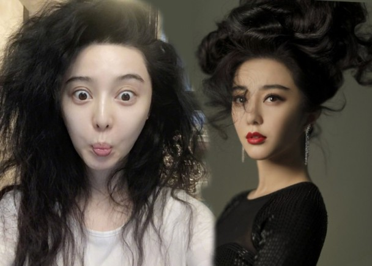
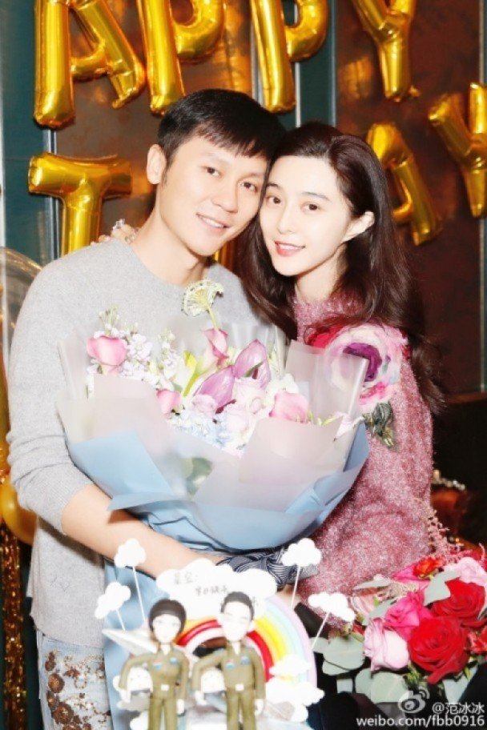

范冰冰早前大方分享其扮靓心得，拥有一头亮黑长发的她，原来其护发秘方并非用最昂贵的护发油或勤做护理，而是要“忍得”。
范冰冰
李晨、范冰冰
新浪娱乐讯 据香港媒体报道，内地女星范冰冰 [微博]早前大方分享其扮靓心得，拥有一头亮黑长发的她，原来其护发秘方并非用最昂贵的护发油或勤做护理，而是要“忍得”，她曾透露：“纵使头发布满发胶，也可以喷点精华素，再捱到第二天才洗头，也曾试过十天没有头发。”问她可担心有味道？她却说连男友李晨 [微博]也习惯了她的“油”味。
至于不洗头等如护发，冰冰自有一套“逻辑性”解释：“头皮也是皮肤，每天洗，本身的油脂都洗掉，抵抗力会变差，我属于头皮不爱出油那种，有时一星期才洗一次。”
至于冰冰是否同样用“免洗”来护肤，她就表示自己超爱敷面膜，但非传闻一年用千张面膜，多数每天敷一次，而她会将不洗头的时间用来敷面膜。